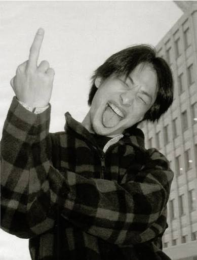

😎 こんにちは 😎
↓ トムとジェリー（粋な演出）
誕生日が近づいています
親友のホームページにコラムが追加されたよ
名前：たいーにゃ
好きな野菜：みょうが、ブロッコリーの上の部分
東京生まれ東京育ち
😍：GACKT、木村拓哉、Andrew Tate、Pavel Durov、苫米地英人、ビスケットオリバ、跡部景吾、大野智、パブロエスコバル
😠：田村淳、佐藤勝利、松島聡、佐藤二朗、TAKA、藤井風、令和ロマンくるま、ムロツヨシ、福田雄一、DeNA南場、松丸りょうご、りゅうじ、カジサック、小栗旬、前田裕二、きまぐれクック、山里亮太、蘭丸、 KPOPアイドルを犬みたいに扱う人、AIで業務効率化している人 などなど
これまでツイッターで数多くの良質なネタツイを輩出してきたのですが、ツイッターを消してしまいました。なので、これからはここで、ネタツイをしていこうと思います。ツイッターを見ずにネタツイをすることになるので、 逆に、時事ネタに捉われず、普遍的で100年後に見ても面白いネタツイが出来るかもしれませんね。
１モンブラン ２チーズケーキ ３該当者なし
和菓子が好きです、は嘘つき確定。洋菓子の方が美味しいから。
ある日の暮方の事である。一人の下人が、羅生門の下で雨やみを待っていた。 広い門の下には、この男のほかに誰もいない。ただ、所々丹塗の剥げた、大きな円柱に、蟋蟀が一匹とまっている。羅生門が、朱雀大路にある以上は、この男のほかにも、雨やみをする市女笠や揉烏帽子が、もう二三人はありそうなものである。それが、この男のほかには誰もいない。 何故かと云うと、この二三年、京都には、地震とか辻風とか火事とか饑饉とか云う災がつづいて起った。そこで洛中のさびれ方は一通りではない。旧記によると、仏像や仏具を打砕いて、その丹がついたり、金銀の箔がついたりした木を、路ばたにつみ重ねて、薪の料に売っていたと云う事である。洛中がその始末であるから、羅生門の修理などは、元より誰も捨てて顧る者がなかった。するとその荒れ果てたのをよい事にして、狐狸が棲む。盗人が棲む。とうとうしまいには、引取り手のない死人を、この門へ持って来て、棄てて行くと云う習慣さえ出来た。そこで、日の目が見えなくなると、誰でも気味を悪るがって、この門の近所へは足ぶみをしない事になってしまったのである。 その代りまた鴉がどこからか、たくさん集って来た。昼間見ると、その鴉が何羽となく輪を描いて、高い鴟尾のまわりを啼きながら、飛びまわっている。ことに門の上の空が、夕焼けであかくなる時には、それが胡麻をまいたようにはっきり見えた。鴉は、勿論、門の上にある死人の肉を、啄みに来るのである。――もっとも今日は、刻限が遅いせいか、一羽も見えない。ただ、所々、崩れかかった、そうしてその崩れ目に長い草のはえた石段の上に、鴉の糞が、点々と白くこびりついているのが見える。下人は七段ある石段の一番上の段に、洗いざらした紺の襖の尻を据えて、右の頬に出来た、大きな面皰を気にしながら、ぼんやり、雨のふるのを眺めていた。 作者はさっき、「下人が雨やみを待っていた」と書いた。しかし、下人は雨がやんでも、格別どうしようと云う当てはない。ふだんなら、勿論、主人の家へ帰る可き筈である。所がその主人からは、四五日前に暇を出された。前にも書いたように、当時京都の町は一通りならず衰微していた。今この下人が、永年、使われていた主人から、暇を出されたのも、実はこの衰微の小さな余波にほかならない。だから「下人が雨やみを待っていた」と云うよりも「雨にふりこめられた下人が、行き所がなくて、途方にくれていた」と云う方が、適当である。その上、今日の空模様も少からず、この平安朝の下人の Sentimentalisme に影響した。申の刻下りからふり出した雨は、いまだに上るけしきがない。そこで、下人は、何をおいても差当り明日の暮しをどうにかしようとして――云わばどうにもならない事を、どうにかしようとして、とりとめもない考えをたどりながら、さっきから朱雀大路にふる雨の音を、聞くともなく聞いていたのである。 雨は、羅生門をつつんで、遠くから、ざあっと云う音をあつめて来る。夕闇は次第に空を低くして、見上げると、門の屋根が、斜につき出した甍の先に、重たくうす暗い雲を支えている。 どうにもならない事を、どうにかするためには、手段を選んでいる遑はない。選んでいれば、築土の下か、道ばたの土の上で、饑死をするばかりである。そうして、この門の上へ持って来て、犬のように棄てられてしまうばかりである。選ばないとすれば――下人の考えは、何度も同じ道を低徊した揚句に、やっとこの局所へ逢着した。しかしこの「すれば」は、いつまでたっても、結局「すれば」であった。下人は、手段を選ばないという事を肯定しながらも、この「すれば」のかたをつけるために、当然、その後に来る可き「盗人になるよりほかに仕方がない」と云う事を、積極的に肯定するだけの、勇気が出ずにいたのである。 下人は、大きな嚔をして、それから、大儀そうに立上った。夕冷えのする京都は、もう火桶が欲しいほどの寒さである。風は門の柱と柱との間を、夕闇と共に遠慮なく、吹きぬける。丹塗の柱にとまっていた蟋蟀も、もうどこかへ行ってしまった。 下人は、頸をちぢめながら、山吹の汗袗に重ねた、紺の襖の肩を高くして門のまわりを見まわした。雨風の患のない、人目にかかる惧のない、一晩楽にねられそうな所があれば、そこでともかくも、夜を明かそうと思ったからである。すると、幸い門の上の楼へ上る、幅の広い、これも丹を塗った梯子が眼についた。上なら、人がいたにしても、どうせ死人ばかりである。下人はそこで、腰にさげた聖柄の太刀が鞘走らないように気をつけながら、藁草履をはいた足を、その梯子の一番下の段へふみかけた。 それから、何分かの後である。羅生門の楼の上へ出る、幅の広い梯子の中段に、一人の男が、猫のように身をちぢめて、息を殺しながら、上の容子を窺っていた。楼の上からさす火の光が、かすかに、その男の右の頬をぬらしている。短い鬚の中に、赤く膿を持った面皰のある頬である。下人は、始めから、この上にいる者は、死人ばかりだと高を括っていた。それが、梯子を二三段上って見ると、上では誰か火をとぼして、しかもその火をそこここと動かしているらしい。これは、その濁った、黄いろい光が、隅々に蜘蛛の巣をかけた天井裏に、揺れながら映ったので、すぐにそれと知れたのである。この雨の夜に、この羅生門の上で、火をともしているからは、どうせただの者ではない。 下人は、守宮のように足音をぬすんで、やっと急な梯子を、一番上の段まで這うようにして上りつめた。そうして体を出来るだけ、平にしながら、頸を出来るだけ、前へ出して、恐る恐る、楼の内を覗いて見た。 見ると、楼の内には、噂に聞いた通り、幾つかの死骸が、無造作に棄ててあるが、火の光の及ぶ範囲が、思ったより狭いので、数は幾つともわからない。ただ、おぼろげながら、知れるのは、その中に裸の死骸と、着物を着た死骸とがあるという事である。勿論、中には女も男もまじっているらしい。そうして、その死骸は皆、それが、かつて、生きていた人間だと云う事実さえ疑われるほど、土を捏ねて造った人形のように、口を開いたり手を延ばしたりして、ごろごろ床の上にころがっていた。しかも、肩とか胸とかの高くなっている部分に、ぼんやりした火の光をうけて、低くなっている部分の影を一層暗くしながら、永久に唖の如く黙っていた。 下人は、それらの死骸の腐爛した臭気に思わず、鼻を掩った。しかし、その手は、次の瞬間には、もう鼻を掩う事を忘れていた。ある強い感情が、ほとんどことごとくこの男の嗅覚を奪ってしまったからだ。 下人の眼は、その時、はじめてその死骸の中に蹲っている人間を見た。檜皮色の着物を着た、背の低い、痩せた、白髪頭の、猿のような老婆である。その老婆は、右の手に火をともした松の木片を持って、その死骸の一つの顔を覗きこむように眺めていた。髪の毛の長い所を見ると、多分女の死骸であろう。 下人は、六分の恐怖と四分の好奇心とに動かされて、暫時は呼吸をするのさえ忘れていた。旧記の記者の語を借りれば、「頭身の毛も太る」ように感じたのである。すると老婆は、松の木片を、床板の間に挿して、それから、今まで眺めていた死骸の首に両手をかけると、丁度、猿の親が猿の子の虱をとるように、その長い髪の毛を一本ずつ抜きはじめた。髪は手に従って抜けるらしい。 その髪の毛が、一本ずつ抜けるのに従って、下人の心からは、恐怖が少しずつ消えて行った。そうして、それと同時に、この老婆に対するはげしい憎悪が、少しずつ動いて来た。――いや、この老婆に対すると云っては、語弊があるかも知れない。むしろ、あらゆる悪に対する反感が、一分毎に強さを増して来たのである。この時、誰かがこの下人に、さっき門の下でこの男が考えていた、饑死をするか盗人になるかと云う問題を、改めて持出したら、恐らく下人は、何の未練もなく、饑死を選んだ事であろう。それほど、この男の悪を憎む心は、老婆の床に挿した松の木片のように、勢いよく燃え上り出していたのである。 下人には、勿論、何故老婆が死人の髪の毛を抜くかわからなかった。従って、合理的には、それを善悪のいずれに片づけてよいか知らなかった。しかし下人にとっては、この雨の夜に、この羅生門の上で、死人の髪の毛を抜くと云う事が、それだけで既に許すべからざる悪であった。勿論、下人は、さっきまで自分が、盗人になる気でいた事なぞは、とうに忘れていたのである。 そこで、下人は、両足に力を入れて、いきなり、梯子から上へ飛び上った。そうして聖柄の太刀に手をかけながら、大股に老婆の前へ歩みよった。老婆が驚いたのは云うまでもない。 老婆は、一目下人を見ると、まるで弩にでも弾かれたように、飛び上った。 「おのれ、どこへ行く。」 下人は、老婆が死骸につまずきながら、慌てふためいて逃げようとする行手を塞いで、こう罵った。老婆は、それでも下人をつきのけて行こうとする。下人はまた、それを行かすまいとして、押しもどす。二人は死骸の中で、しばらく、無言のまま、つかみ合った。しかし勝敗は、はじめからわかっている。下人はとうとう、老婆の腕をつかんで、無理にそこへねじ倒した。丁度、鶏の脚のような、骨と皮ばかりの腕である。 「何をしていた。云え。云わぬと、これだぞよ。」 下人は、老婆をつき放すと、いきなり、太刀の鞘を払って、白い鋼の色をその眼の前へつきつけた。けれども、老婆は黙っている。両手をわなわなふるわせて、肩で息を切りながら、眼を、眼球がまぶたの外へ出そうになるほど、見開いて、唖のように執拗く黙っている。これを見ると、下人は始めて明白にこの老婆の生死が、全然、自分の意志に支配されていると云う事を意識した。そうしてこの意識は、今までけわしく燃えていた憎悪の心を、いつの間にか冷ましてしまった。後に残ったのは、ただ、ある仕事をして、それが円満に成就した時の、安らかな得意と満足とがあるばかりである。そこで、下人は、老婆を見下しながら、少し声を柔らげてこう云った。 「己は検非違使の庁の役人などではない。今し方この門の下を通りかかった旅の者だ。だからお前に縄をかけて、どうしようと云うような事はない。ただ、今時分この門の上で、何をして居たのだか、それを己に話しさえすればいいのだ。」 すると、老婆は、見開いていた眼を、一層大きくして、じっとその下人の顔を見守った。まぶたの赤くなった、肉食鳥のような、鋭い眼で見たのである。それから、皺で、ほとんど、鼻と一つになった唇を、何か物でも噛んでいるように動かした。細い喉で、尖った喉仏の動いているのが見える。その時、その喉から、鴉の啼くような声が、喘ぎ喘ぎ、下人の耳へ伝わって来た。 「この髪を抜いてな、この髪を抜いてな、鬘にしようと思うたのじゃ。」 下人は、老婆の答が存外、平凡なのに失望した。そうして失望すると同時に、また前の憎悪が、冷やかな侮蔑と一しょに、心の中へはいって来た。すると、その気色が、先方へも通じたのであろう。老婆は、片手に、まだ死骸の頭から奪った長い抜け毛を持ったなり、蟇のつぶやくような声で、口ごもりながら、こんな事を云った。 「成程な、死人の髪の毛を抜くと云う事は、何ぼう悪い事かも知れぬ。じゃが、ここにいる死人どもは、皆、そのくらいな事を、されてもいい人間ばかりだぞよ。現在、わしが今、髪を抜いた女などはな、蛇を四寸ばかりずつに切って干したのを、干魚だと云うて、太刀帯の陣へ売りに往んだわ。疫病にかかって死ななんだら、今でも売りに往んでいた事であろ。それもよ、この女の売る干魚は、味がよいと云うて、太刀帯どもが、欠かさず菜料に買っていたそうな。わしは、この女のした事が悪いとは思うていぬ。せねば、饑死をするのじゃて、仕方がなくした事であろ。されば、今また、わしのしていた事も悪い事とは思わぬぞよ。これとてもやはりせねば、饑死をするじゃて、仕方がなくする事じゃわいの。じゃて、その仕方がない事を、よく知っていたこの女は、大方わしのする事も大目に見てくれるであろ。」 老婆は、大体こんな意味の事を云った。 下人は、太刀を鞘におさめて、その太刀の柄を左の手でおさえながら、冷然として、この話を聞いていた。勿論、右の手では、赤く頬に膿を持った大きな面皰を気にしながら、聞いているのである。しかし、これを聞いている中に、下人の心には、ある勇気が生まれて来た。それは、さっき門の下で、この男には欠けていた勇気である。そうして、またさっきこの門の上へ上って、この老婆を捕えた時の勇気とは、全然、反対な方向に動こうとする勇気である。下人は、饑死をするか盗人になるかに、迷わなかったばかりではない。その時のこの男の心もちから云えば、饑死などと云う事は、ほとんど、考える事さえ出来ないほど、意識の外に追い出されていた。 「きっと、そうか。」 老婆の話が完ると、下人は嘲けるような声で念を押した。そうして、一足前へ出ると、不意に右の手を面皰から離して、老婆の襟上をつかみながら、噛みつくようにこう云った。 「では、己が引剥をしようと恨むまいな。己もそうしなければ、饑死をする体なのだ。」 下人は、すばやく、老婆の着物を剥ぎとった。それから、足にしがみつこうとする老婆を、手荒く死骸の上へ蹴倒した。梯子の口までは、僅に五歩を数えるばかりである。下人は、剥ぎとった檜皮色の着物をわきにかかえて、またたく間に急な梯子を夜の底へかけ下りた。 しばらく、死んだように倒れていた老婆が、死骸の中から、その裸の体を起したのは、それから間もなくの事である。老婆はつぶやくような、うめくような声を立てながら、まだ燃えている火の光をたよりに、梯子の口まで、這って行った。そうして、そこから、短い白髪を倒さまにして、門の下を覗きこんだ。外には、ただ、黒洞々たる夜があるばかりである。 下人の行方は、誰も知らない。
Twitterをやめたことで、一歩カリスマに近づいた。インスタも辞めてもう一歩カリスマに近づきたいものの、インスタでしか繋がってない人とかもいて辞めるに辞めれない。その程度と言えばその程度なんだけど、 今のたいーにゃにわざわざ向こうから追いかけるだけのカリスマがあるかと言われると。。。トホホ、日々精進ですな。。。
高校の頃から顎関節症で、顎がカクカクしてた。最近は朝起きるとアゴが全く開かず、数十分経ったらカクカクし始めてアゴが開くといった感じだったが、ついに昨日（2026/11/24）、一日中アゴが開かなくなった。うえーん
YouTubeチャンネル「DROPOUT ドロップアウトした冒険者たち」にて公開された動画内で、GACKTがNISAについて言及した。
この動画が話題になった後の主な反応は二つ。「GACKTがNISAを投資商品と誤認しているとバカにする人」と、「仕組みやリスクを十分理解しないまま、周囲に流されて投資している人に対する警鐘としては間違っていないと擁護する人」だ。
これらの意見はどちらも浅はかであり、たいーにゃに言わせればナンセンス。結論、GACKTは悪くないっすねェ。むしろ、悪いのはあなたである。
そもそも、GACKTのような富裕層にとってNISAはメリットが少ない。つまり、NISAについて詳しいことは、すなわち貧しいと言うことなのだ。 詳しいこと自体が恥ずかしいとされることがある。例えば、鉄道。たいーにゃの同期がホームに滑り込んできた電車の車体を見て「ふーん、新しいなあ」と言った時、なんて恥ずかしい奴だと思った。 VTuber、フィギュア収集、アニメ鑑賞も同様（言うまでもない）。 これらの情報は、知らなければ知らないほどカッコいいのだ。イケてる男は鉄道の車体の種類を調べないし、YouTubeのアルゴリズムにVTuberに興味があると判断されない。NISAもその類なのだ。 従って、NISAなんて、知らなければ知らないほどカッコいいのだ。NISAについて誤解しているGACKTはイケてる男であり、重箱の隅をつつくように揚げ足をとっているNISA専門家の君たちは、撮り鉄の仲間なのだ（ハム太郎）。
面白すぎて人生がツイッターに乗っ取られてしまいそうだから。ネタツイに支配される人生はユートピアのようで、ディストピアだと思った。誰にも見られないノートにネタツイをし続ける奴が本当のネタツイッタラーだ。
あの感じでメンタル強いんだ
浅いところにある局所的な答えに満足して、自分の考えかのように話す人。具体的には、田村淳。自分で何も考えてないのにそれらしいことだけ言う感じがキモい。あと共感されないけどTAKA。バカなくせに、思想ありますみたいなスタンスだから。 逆に深いのはタモリ。タモリが何考えてるのか全然分からないから。
LINEは機能のほとんどが要らないし、広告も多い。送信取り消しに金かかるとかダサい。芸能人でいうと、田村淳（芸人もできます、勉強もできます、AIも詳しいです、オンラインサロンもやってます、みたいな多彩ヅラしているものの、評価されているのは芸人だけ、 と言うのがLINEにそっくり）。Telegramは広告がないし、チャットと電話だけでソリッド。芸能人でいうとタモリ。
Suicaの新キャラクターの名前が公募で選ばれるそうです。日々、言の葉を操る文筆家として活動している者として見過ごすわけにはいかず、応募しました。まず、「うさぎ」「紫」「B案」「Suica」などにかけた愛称で応募している人はセンスがないです（唐突な辛口）。 当然、多くの人がそれらにかけた愛称を応募するので差別化が難しいし、今日（2026/11/18）の発表会で、選考委員長の小山薫堂氏は、新しい名前について、何十年、さらには100年以上も世界の人々に覚えてもらえるものになってほしいという期待を口にしています。 選考委員長の意向も確認せず、一時的に話題になっているだけのワードに飛びつくのはプロ失格。また、「タッチ」「改札」などにかけるのも悪手と言えるでしょう（今後数十年に渡って現状の利用方法が継続するとは限らないため）。 現在、Suicaは、「移動と少額決済のデバイス」から「生活のデバイス」へ、と言う理念を掲げていることを踏まえると、新キャラクターは、単なるSuicaのキャラクターではなく、 人々の普遍的な日常に寄り添い、互いに成長する仲間の象徴であると言えるでしょう。これらの内容から、選考委員会の選考基準は以下の11個です（断言）。
さて、選考基準が明らかになりましたね。では、実際に、たいーにゃがどんな想いを込めて、どんな名前で応募したのかは次の機会に。
面倒すぎるから。
肺がスースーした。
最後までチョコたっぷりってほどチョコを感じたことはないからです。
ヌメロンの最善手に関する既存の考察は、全ての数字が同様に確からしく選ばれるという前提があるので、間違えています。例えば、四桁の場合、1234,9876,2468という数字を設定する確率は低くなるでしょう。 おそらく、1548,4179,3952のように、よりランダムに感じる数字を選ぶ確率の方が大きいはずです。このように、単調増加しない、単調減少しない、数字が連続しない、等差数列でない、などの要素を基に全ての数字の羅列(10*9*8*7通り)に対して「ランダム度」を付与し、 ランダム度が高い方が選ばれやすいという前提のもとで考察をしなくては意味がないと思います。そして、この理論をAIに話し、Pythonでアルゴリズム作ってって言えば、既存の最善手よりもより優れた方法が見つかると思います。 ただし、ワイはさらにその上を行く理論を既に発見しています。この話はまた今度。
来たるフットサルに備えて、自分が今どのくらい走れるのかなと思って、駒沢公園を一周ストップウォッチ片手に走ってみました。記録は、11分09秒（一周2.14km）。1500mに換算すると、7分49秒。手元のスマート・フォンヌで検索したところ、 体力テストの男子学年別1500m平均タイムは、中一が7分04秒、中二が6分30秒、中三が6分18秒、高一が6分28秒、高二が6分12秒、高三が6分05秒とのこと（ワイ7分49秒）。これがオトナになるってことなんですかね。トホホ。。。
近所にゲートボール場があって、そこに住み着いている猫がいる。おばさんたちがよくエサをあげてて、みんなで撫でたりしてる。よく野生動物を素手で触れるよなと思う。絶対雑菌だらけでしょ。
ラーメンって麺が要らないと思う。肉うどんにとっての肉吸いみたいな感じで、麺のないラーメンをスープとして楽しみたい。麺の分を水餃子にして欲しい。
AIで業務を効率化しましたって言ってる人がいて、内容を見てみたら、「メールの内容を15分間に一回AIが見て、その内容をSlackで送ってくる」「カレンダーの内容をGeminiが取得して予定を教えてくれる」ってものでした。 普通にメールとカレンダー見た方がはえーよbro
野球選手はイチロー、新庄、大谷、ダルビッシュ、清原、常松くん以外知らないが、松井秀喜はなんとなく聞いたことがあります。巨人の監督になると聞きました。ぜひ、頑張って欲しいですね。
パッキャオ、マイクタイソン、ライアンガルシアと試合するって流れてたと思うんだけど、全部実現してないのはなぜ？結構楽しみにしてたんだけどな。がっかり
DJ松永のDJを見ても何してるのかよく分からなかったけど、DJ SODAのDJをみたらDJ松永の凄さが分かった。イニエスタのプレーが簡単そうに見えるみたいなことだね。

なぜひろゆきの画像を貼っているかというと、たいーにゃは、このようにHTML丸出しな昔ながらのホームページを見ると、なぜかひろゆきを思い出すからです。CSSは甘えだよね。
インスタで流れてきたゲームが面白そうだったのにアプリを入れてみたら途中から有料だったから自分で作りました。でも、全部無料のやつ使ったからちゃんと読み込めなかったりします。
遊びたい方はこちらからどうぞ。
１）URLを作成 ２）URLを友達に送る ３）二人で遊ぶ
ワンピースの最終回について、ずっと前から友人たちに話しているのですが、文章にしないと後で言った言わないになりそうなので、ここに書いておきます。 まず、海賊王になるのは、バギーです。具体的には、ルフィと黒ひげが戦い、なんやかんやでルフィが勝ちます。 直後、新聞を書いてる鳥みたいなやつ（名前は忘れました）が倒れている黒ひげと、偶然そこに居合わせたバギーを見て、バギーが黒ひげを倒したと勘違いし、バギーを海賊王として世界中に報道します。 全てを知っているナミはルフィに対し、「あなたこれで良いの！？海賊王になるのが夢だったんじゃないの！」と言いますが、ルフィは「別にいいンだ🎶一番自由なやつが海賊王だ！」と言います。 時が飛んで10年後、土管の上に座るウソップが、3人の子供達を前に麦わらの一味とした冒険の一部始終を語りますが、子供達に嘘つき扱いされます。 そのやりとりを聞いていたルフィが子供達の後ろから「ニッシッシ（笑）」みたいな反応をして終わりです。
海底でしょうね。そこ（底）においてきたのでしょう。

若気の至り